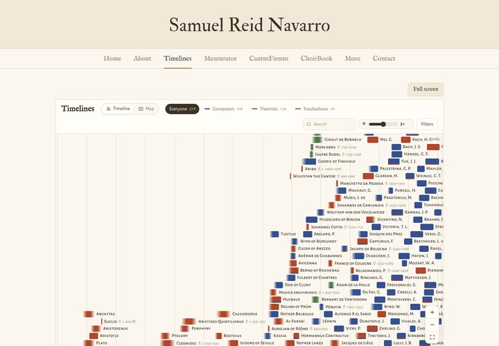
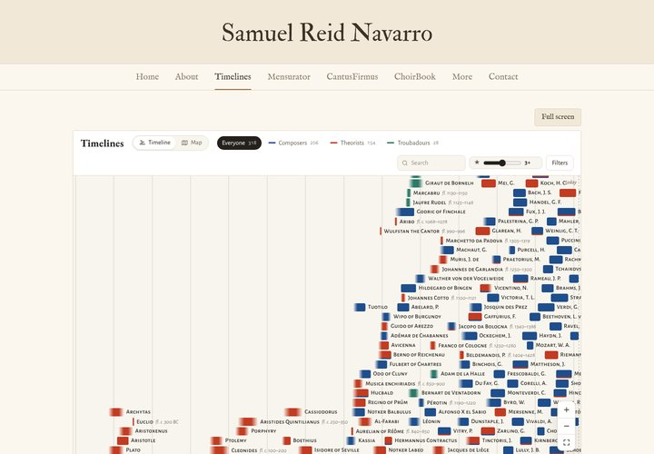
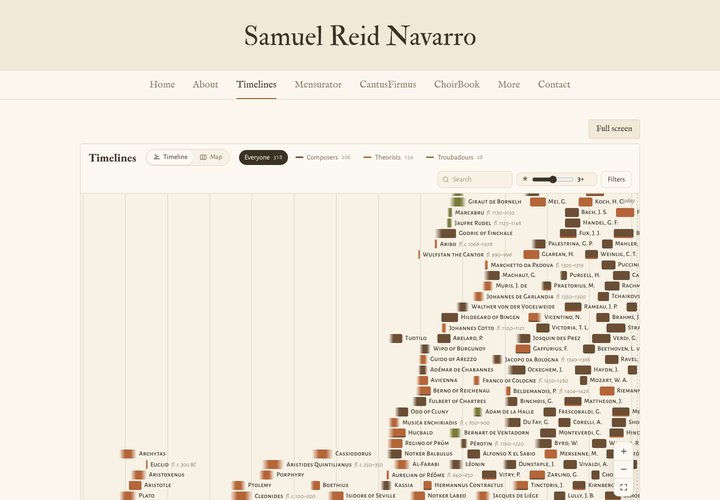
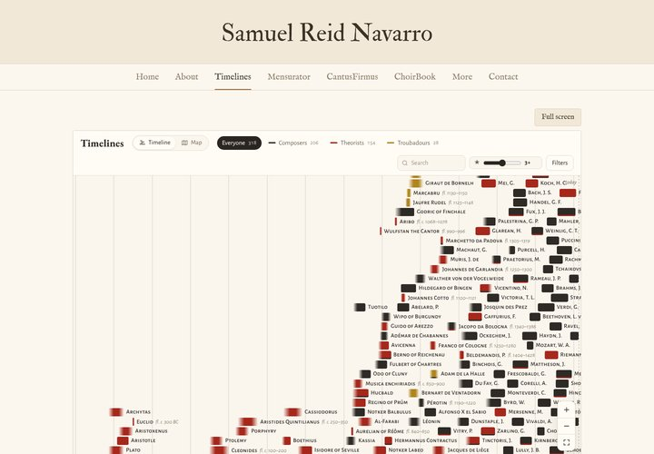
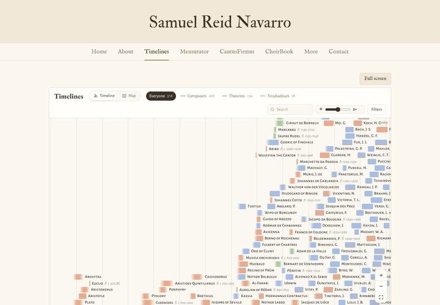
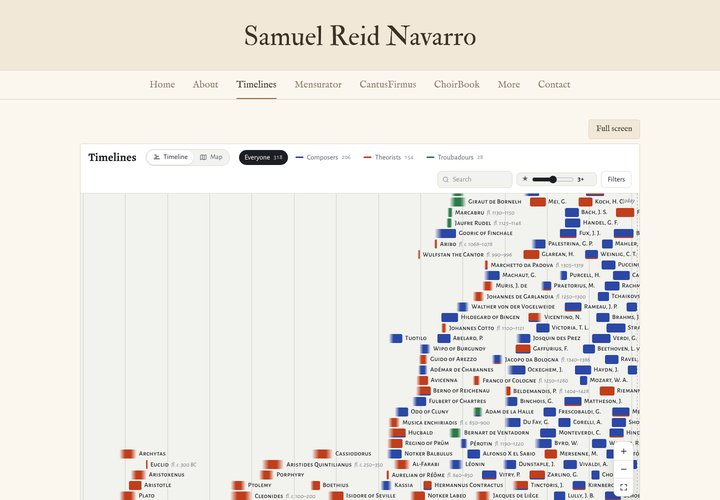

Timelines designs

1. Parchment cleanExactly the site's own cream, sand and brown, with softened manuscript colours for the three groups. The title and headings use the site's IM Fell type.
2. Ivory and pigmentA brighter, near-white ivory with crisp dark ink and stronger pigment colours (azurite, cinnabar, verdigris). The most clinical of the five, headings in EB Garamond.
3. Sand and sepiaTone on tone: every colour comes from the site's earth palette, with umber, terracotta and olive for the groups. The calmest and most unified.
4. RubricCream page with black and red, like the rubrics in a liturgical book but completely flat: composers in ink, theorists in red, troubadours in ochre.
5. Linen pastelVery light and airy: pale tinted bars with dark lettering instead of white, on a linen background. Softest look, closest to the site's lightness.
CurrentThe live app as it is now, for comparison.